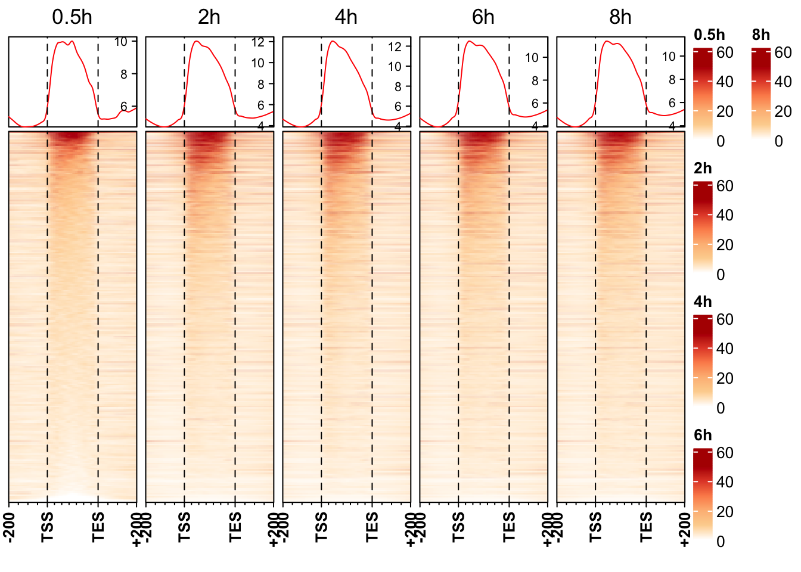
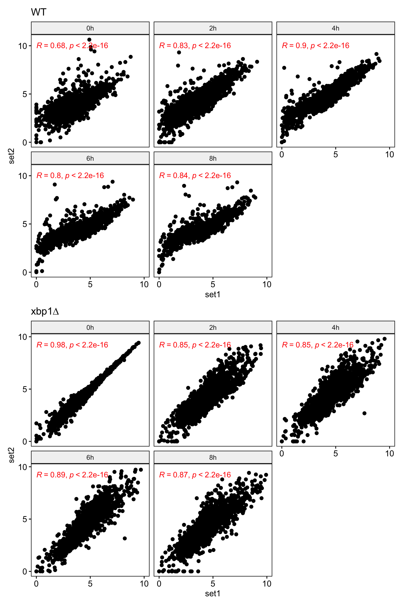
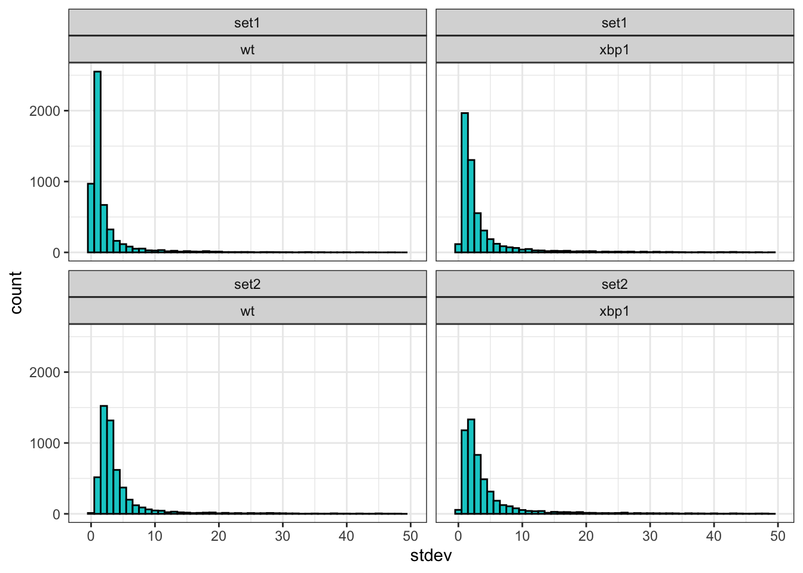
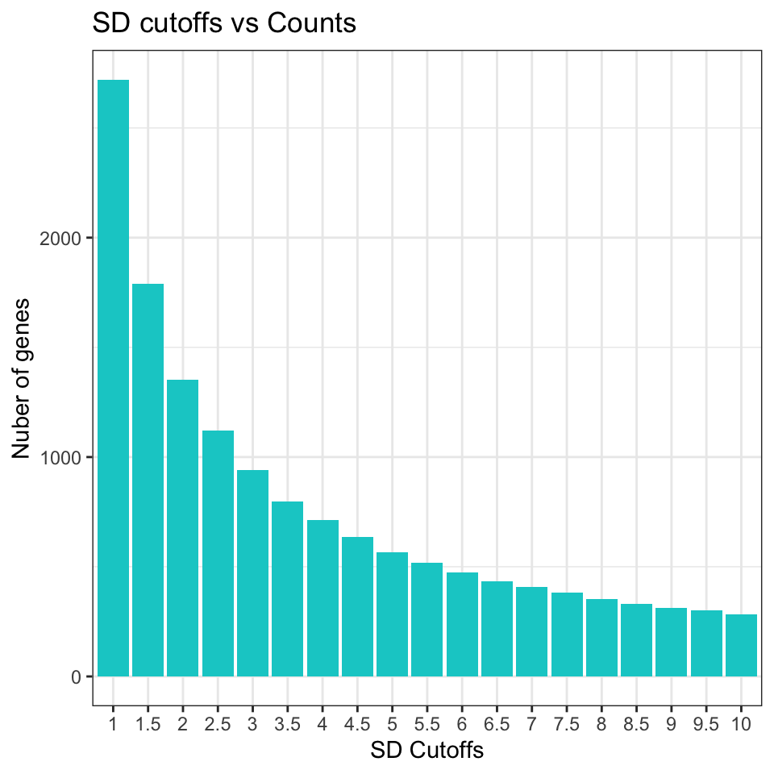
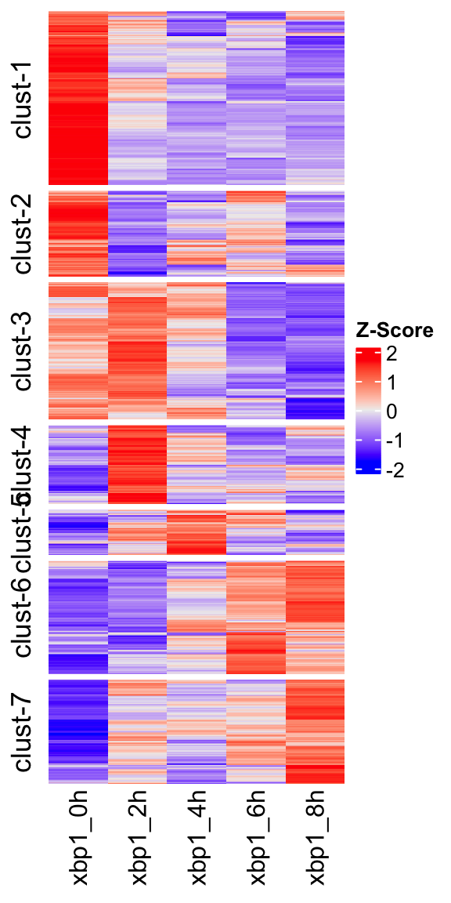
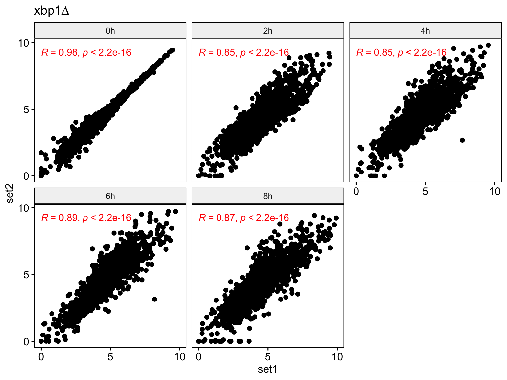
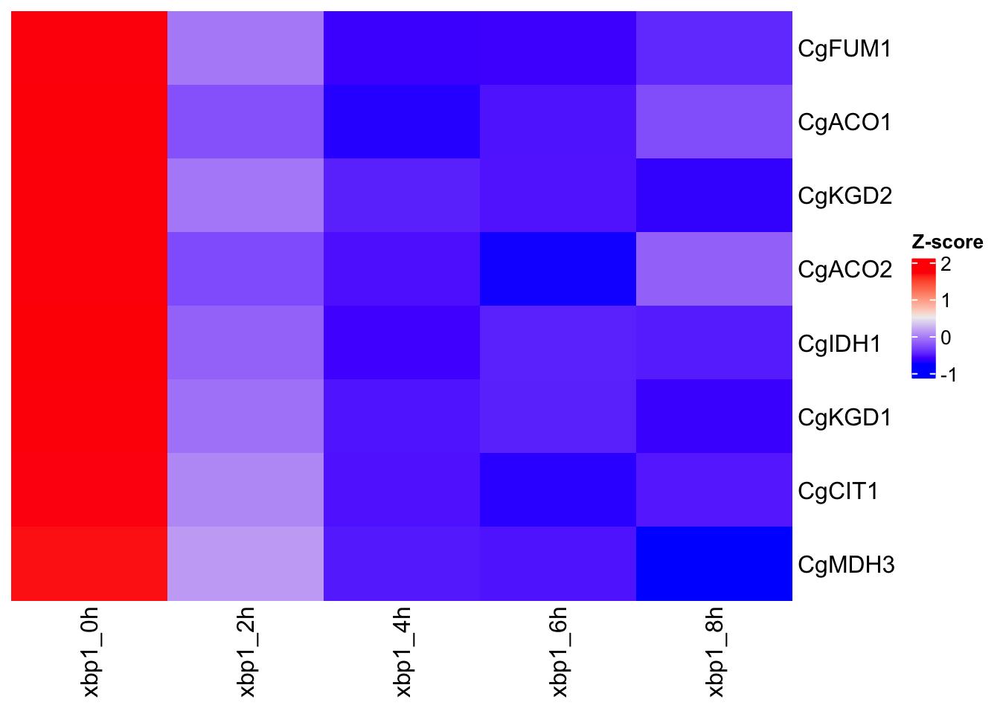
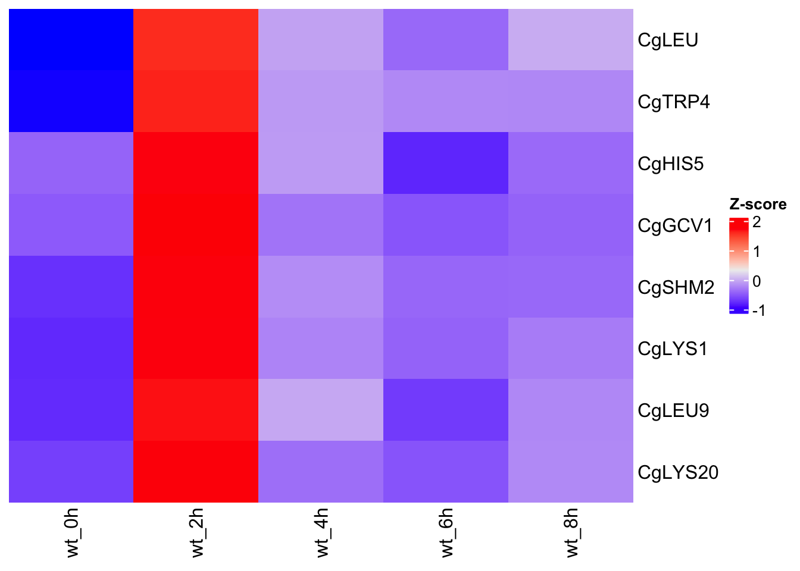
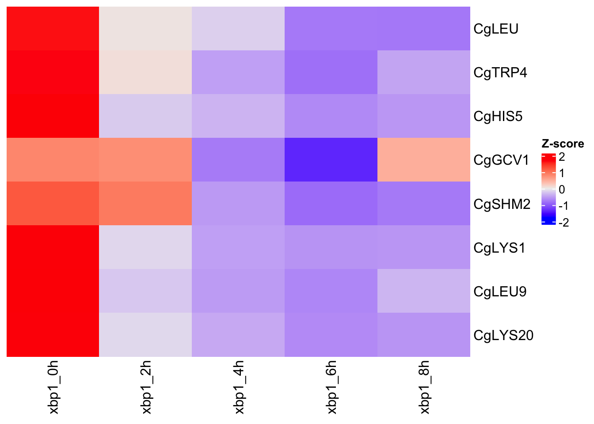

library(magrittr)
source("../R/chip_analysis_functions.R")
library(EnrichedHeatmap)Warning: package 'EnrichedHeatmap' was built under R version 4.2.3library(ggplot2)
library(patchwork)library(magrittr)
source("../R/chip_analysis_functions.R")
library(EnrichedHeatmap)Warning: package 'EnrichedHeatmap' was built under R version 4.2.3library(ggplot2)
library(patchwork)gff_file <- "../data/C_glabrata_CBS138_version_s02-m07-r06_features.gff"
gff <- GenomicFeatures::makeTxDbFromGFF(gff_file, metadata = T)
genes <- GenomicFeatures::genes(gff)
## prepare signal data
bw_files_dir <- c("../data/bw/WT")
bw_files <- list.files(bw_files_dir, pattern = "*set1.*bw", recursive = T, full.names = T)
names(bw_files) <- c("0.5h", "2h", "4h", "6h", "8h")
bw_files <- tibble::enframe(bw_files)
## generate normalised matrix in tidy way
wt_norm_mat <- bw_files %>%
dplyr::mutate(bw = purrr::map(value, function(ii) {
rtracklayer::import(ii)
})) %>%
dplyr::mutate(norm_matrix = purrr::map(bw, function(ii) {
nn <- EnrichedHeatmap::normalizeToMatrix(signal = ii,
target = genes,
value_column = "score",
smooth = T,
extend = 200)
return(nn)
}))
## plot hm list
wt_profile_heatmap <- get_enrichment_heatmap_list(
x = wt_norm_mat$norm_matrix,
col = circlize::colorRamp2(breaks = seq(0, 50, by = 10), colors = c("white", "#fdd49e", "#fdbb84", "#fc8d59", "#e34a33", "#b30000")),
names = wt_norm_mat$name,
titles = wt_norm_mat$name,
axis_name = c("-200", "TSS", "TES", "+200"),
axis_name_rot = 90 ,
axis_name_gp = gpar(fontsize = 10, fontface = "bold"),
pos_line = T,
top_annotation = HeatmapAnnotation(lines = anno_enriched(axis_param = list(side = "right", facing = "inside")))
)
ComplexHeatmap::draw(wt_profile_heatmap)
# load FPKM matrix
wt_fpkm_mat <- readr::read_rds(file = "../data/rds/cg_polII_wt_thp1_sample_wise_fpkm.rds")
wt_fpkm_mat <- wt_fpkm_mat %>%
tidyr::gather("Cond", "FPKM", -gene_name) %>%
tidyr::separate(col = "Cond", sep = "_", into = c("organism", "strain", "condition", "timepoint", "replicate"))
xbp1_fpkm_mat <- readr::read_rds(file = "../data/rds/cg_polII_xbp1_thp1_sample_wise_fpkm.rds")
xbp1_fpkm_mat <- xbp1_fpkm_mat %>%
tidyr::gather("Cond", "FPKM", -gene_name) %>%
tidyr::separate(col = "Cond", sep = "_", into = c("organism", "strain", "condition", "timepoint", "replicate"))
## combine datasets
cg_polII_data <- dplyr::bind_rows(wt_fpkm_mat, xbp1_fpkm_mat) %>%
dplyr::group_by(gene_name, strain, condition, replicate) %>%
dplyr::mutate(stdev = sd(FPKM)) ## calculate sd within group across all timepoints . Make sure that number of elem in each group must be equal to time points.
dplyr::bind_rows(wt_fpkm_mat, xbp1_fpkm_mat) %>% dplyr::group_by(gene_name, strain, condition, replicate) %>%
dplyr::tally() %>%
dplyr::arrange(desc(n))# A tibble: 21,244 × 5
# Groups: gene_name, strain, condition [10,622]
gene_name strain condition replicate n
<chr> <chr> <chr> <chr> <int>
1 CAGL0A00105g wt thp1 set1 5
2 CAGL0A00105g wt thp1 set2 5
3 CAGL0A00105g xbp1 thp1 set1 5
4 CAGL0A00105g xbp1 thp1 set2 5
5 CAGL0A00110g wt thp1 set1 5
6 CAGL0A00110g wt thp1 set2 5
7 CAGL0A00110g xbp1 thp1 set1 5
8 CAGL0A00110g xbp1 thp1 set2 5
9 CAGL0A00116g wt thp1 set1 5
10 CAGL0A00116g wt thp1 set2 5
# ℹ 21,234 more rows## cross check the numbers (e.g number of unique genes, organism , strain, conditions etc.)
cg_polII_data %>% dplyr::ungroup() %>% dplyr::summarise_all(dplyr::n_distinct)# A tibble: 1 × 8
gene_name organism strain condition timepoint replicate FPKM stdev
<int> <int> <int> <int> <int> <int> <int> <int>
1 5311 1 2 1 5 2 106090 21237# WT
wt_data_for_corr <- cg_polII_data %>% dplyr::filter(strain == "wt") %>%
tidyr::pivot_wider(id_cols = c(gene_name, timepoint),
names_from = replicate,
values_from = FPKM)
plot_wt_cor <- wt_data_for_corr %>%
dplyr::mutate(set1 = log2(set1+1),set2 = log2(set2+1)) %>%
ggpubr::ggscatter(x = "set1",y = "set2", facet.by = "timepoint", cor.coef = T ,cor.coeff.args = list(col = "red"), nrow = 2 ) +
ggtitle("WT") +
scale_y_continuous(breaks = c(0,5,10)) + scale_x_continuous(breaks = c(0,5,10), limits = c(0,10))
# xbp1
xbp1_data_for_corr <- cg_polII_data %>% dplyr::filter(strain == "xbp1") %>%
tidyr::pivot_wider(id_cols = c(gene_name, timepoint),
names_from = replicate,
values_from = FPKM)
plot_xbp1_cor <- xbp1_data_for_corr %>%
dplyr::mutate(set1 = log2(set1+1),set2 = log2(set2+1)) %>%
ggpubr::ggscatter(x = "set1",y = "set2", facet.by = "timepoint", cor.coef = T ,cor.coeff.args = list(col = "red"), nrow = 2 ) + ggtitle("xbp1∆") +
scale_y_continuous(breaks = c(0,5,10)) + scale_x_continuous(breaks = c(0,5,10), limits = c(0,10))
plot_wt_cor / plot_xbp1_cor
gp <- cg_polII_data %>%
dplyr::slice(1L) %>% ## get one elem of each group
ggplot() + geom_histogram(aes(x = stdev), binwidth = 1, fill = "cyan3", col = "black") + xlim(-1, 50) + facet_wrap(replicate ~ strain) + theme_bw()
gpWarning: Removed 268 rows containing non-finite values (`stat_bin()`).Warning: Removed 8 rows containing missing values (`geom_bar()`).
gp <- counts_by_sd_cutoffs(
x = wt_fpkm_mat %>%
tidyr::spread(timepoint, FPKM) %>%
dplyr::filter(replicate == "set1") %>%
dplyr::select_if(is.double),
y = paste(c(0, 2, 4, 6, 8), "h", sep = ""),
sds_cutoffs = seq(1, 10, by = 0.5)
)
gp + theme_bw()
## @@@@@@@@@@@@@@@@@@@@@@@@@@@@@@@@@@@@@@@@@@@@@@@@@@@@@@@@@@@@@@@@@@@@
#### zscore heatmap plot
## @@@@@@@@@@@@@@@@@@@@@@@@@@@@@@@@@@@@@@@@@@@@@@@@@@@@@@@@@@@@@@@@@@@@
sd_cut_off <- 2.25
strain_type <- "wt"
rep <- "set1"
fpkm_mat <- cg_polII_data %>%
dplyr::ungroup() %>%
dplyr::filter(stdev >= sd_cut_off, replicate == rep) %>%
#dplyr::filter(strain == strain_type, stdev >= sd_cut_off, replicate == rep) %>%
dplyr::select(gene_name, strain, timepoint, FPKM) %>%
tidyr::unite(col = "ident", sep = "_", strain, timepoint, remove = F) %>%
dplyr::select(-timepoint) %>%
dplyr::group_by(gene_name)
zscore_mats <- fpkm_mat %>%
dplyr::group_by( strain, gene_name) %>%
dplyr::mutate(zscore = scale(FPKM)) %>%
dplyr::select(-FPKM) %>%
tidyr::spread(key = ident, value = zscore) %>%
dplyr::group_by(strain) %>%
dplyr::group_split() %>%
purrr::map(~ ..1 %>% dplyr::select(-strain) %>% TidyWrappers::tbl_remove_vars_NA_any())
# plot WT heatmap
hm_data <- zscore_mats[[1]] %>%
as.data.frame() %>%
tibble::column_to_rownames("gene_name")
seed <- 7173
set.seed(seed)
km <- kmeans(hm_data, centers = 8)
table(km$cluster)
1 2 3 4 5 6 7 8
166 149 164 219 85 217 151 77 cl_order <- factor(km$cluster, levels = c(3,2,1,6,4,7,8,5)) %>%
forcats::fct_relabel(~paste("clust",1:8, sep = "-"))
cg_wt_heatmap = ComplexHeatmap::Heatmap(hm_data, show_row_dend = F,
show_row_names = F,
cluster_columns = F,
show_column_dend = F,
row_split = cl_order,
name = "Z-Score",
cluster_row_slices = F)Warning: The input is a data frame-like object, convert it to a matrix.cg_wt_heatmap
hm_data <- zscore_mats[[2]] %>%
as.data.frame() %>%
tibble::column_to_rownames("gene_name")
seed <- 7173
set.seed(seed)
km <- kmeans(hm_data, centers = 7)
table(km$cluster)
1 2 3 4 5 6 7
400 329 131 506 229 249 302 cl_order <- factor(km$cluster, levels = c(4,6,1,5,3,2,7)) %>%
forcats::fct_relabel(~paste("clust",1:7, sep = "-"))
cg_xbp1_heatmap = ComplexHeatmap::Heatmap(hm_data, show_row_dend = F,
show_row_names = F,
cluster_columns = F,
show_column_dend = F,
row_split = cl_order,
name = "Z-Score",
cluster_row_slices = F)Warning: The input is a data frame-like object, convert it to a matrix.cg_xbp1_heatmap
genes_by_processes <- tibble::tribble(
~gene_name, ~processes,
"CAGL0A01045g", "TCA Cycle",
"CAGL0D06424g", "TCA Cycle",
"CAGL0E01287g", "TCA Cycle",
"CAGL0F02431g", "TCA Cycle",
"CAGL0G02673g", "TCA Cycle",
"CAGL0G08712g", "TCA Cycle",
"CAGL0H03993g", "TCA Cycle",
"CAGL0L06798g", "TCA Cycle",
"CAGL0A00363g", "Amino Acid Biosynthesis",
"CAGL0A02574g", "Amino Acid Biosynthesis",
"CAGL0C01243g", "Amino Acid Biosynthesis",
"CAGL0D04356g", "Amino Acid Biosynthesis",
"CAGL0F01749g", "Amino Acid Biosynthesis",
"CAGL0F06875g", "Amino Acid Biosynthesis",
"CAGL0G06732g", "Amino Acid Biosynthesis",
"CAGL0J06402g", "Amino Acid Biosynthesis",
"CAGL0E01243g", "Iron Homeostasis",
"CAGL0G06798g", "Iron Homeostasis",
"CAGL0H03487g", "Iron Homeostasis",
"CAGL0J05060g", "Iron Homeostasis",
"CAGL0L11990g", "Iron Homeostasis",
"CAGL0M08910g", "Iron Homeostasis",
"CAGL0L09251g", "Stress Response",
"CAGL0G10175g", "Stress Response",
"CAGL0G01540g", "Stress Response",
"CAGL0L05412g", "Stress Response"
)
id_map <- tibble::tribble(
~gene_name, ~gene_symbol,
"CAGL0A01045g", "CgFUM1",
"CAGL0D06424g", "CgACO1",
"CAGL0E01287g", "CgKGD2",
"CAGL0F02431g", "CgACO2",
"CAGL0G02673g", "CgIDH1",
"CAGL0G08712g", "CgKGD1",
"CAGL0H03993g", "CgCIT1",
"CAGL0L06798g", "CgMDH3",
"CAGL0A00363g", "CgLEU",
"CAGL0A02574g", "CgTRP4",
"CAGL0C01243g", "CgHIS5",
"CAGL0D04356g", "CgGCV1",
"CAGL0F01749g", "CgSHM2",
"CAGL0F06875g", "CgLYS1",
"CAGL0G06732g", "CgLEU9",
"CAGL0J06402g", "CgLYS20",
"CAGL0L09251g", "CgHAL1",
"CAGL0G10175g", "CgAWP6",
"CAGL0G01540g", "CgNCE103",
"CAGL0L05412g", "CgASF1",
"CAGL0E01243g", "CgCTH2",
"CAGL0G06798g", "CgLSO1",
"CAGL0H03487g", "CgAFT1",
"CAGL0J05060g", "CgZAP1",
"CAGL0L11990g", "CgGRX4",
"CAGL0M08910g", "CgSNF1"
)
# WT TCA cycle
data_for_tca_heatmap_wt <- genes_by_processes %>%
dplyr::left_join(id_map) %>%
dplyr::left_join(zscore_mats[[1]]) %>%
dplyr::filter(processes == "TCA Cycle") %>%
dplyr::select(-c(processes,gene_name)) %>%
as.data.frame() %>%
tibble::column_to_rownames("gene_symbol")Joining with `by = join_by(gene_name)`
Joining with `by = join_by(gene_name)`ComplexHeatmap::Heatmap(data_for_tca_heatmap_wt, cluster_columns = F, show_row_dend = F, name = "Z-score", cluster_rows = F)Warning: The input is a data frame-like object, convert it to a matrix.
# XBP1 TCA cycle
data_for_tca_heatmap_xbp1 <- genes_by_processes %>%
dplyr::left_join(id_map) %>%
dplyr::left_join(zscore_mats[[2]]) %>%
dplyr::filter(processes == "TCA Cycle") %>%
dplyr::select(-c(processes,gene_name)) %>%
as.data.frame() %>%
tibble::column_to_rownames("gene_symbol")Joining with `by = join_by(gene_name)`
Joining with `by = join_by(gene_name)`ComplexHeatmap::Heatmap(data_for_tca_heatmap_xbp1, cluster_columns = F, show_row_dend = F, name = "Z-score", cluster_rows = F)Warning: The input is a data frame-like object, convert it to a matrix.
# WT Amino acid
data_for_aa_heatmap_wt <- genes_by_processes %>%
dplyr::left_join(id_map) %>%
dplyr::left_join(zscore_mats[[1]]) %>%
dplyr::filter(processes == "Amino Acid Biosynthesis") %>%
dplyr::select(-c(processes,gene_name)) %>%
as.data.frame() %>%
tibble::column_to_rownames("gene_symbol")Joining with `by = join_by(gene_name)`
Joining with `by = join_by(gene_name)`ComplexHeatmap::Heatmap(data_for_aa_heatmap_wt, cluster_columns = F, show_row_dend = F, name = "Z-score", cluster_rows = F)Warning: The input is a data frame-like object, convert it to a matrix.
# XBP1 Amino acid
data_for_aa_heatmap_xbp1 <- genes_by_processes %>%
dplyr::left_join(id_map) %>%
dplyr::left_join(zscore_mats[[2]]) %>%
dplyr::filter(processes == "Amino Acid Biosynthesis") %>%
dplyr::select(-c(processes,gene_name)) %>%
as.data.frame() %>%
tibble::column_to_rownames("gene_symbol")Joining with `by = join_by(gene_name)`
Joining with `by = join_by(gene_name)`ComplexHeatmap::Heatmap(data_for_aa_heatmap_xbp1, cluster_columns = F, show_row_dend = F, name = "Z-score", cluster_rows = F)Warning: The input is a data frame-like object, convert it to a matrix.